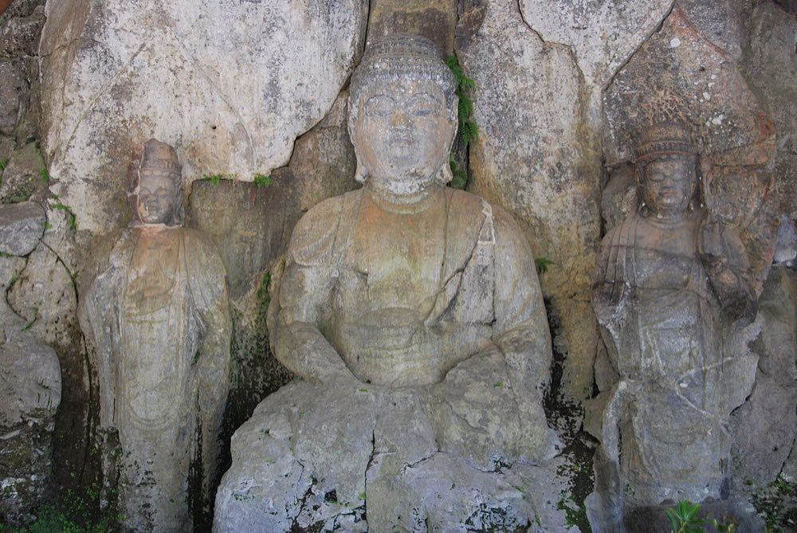
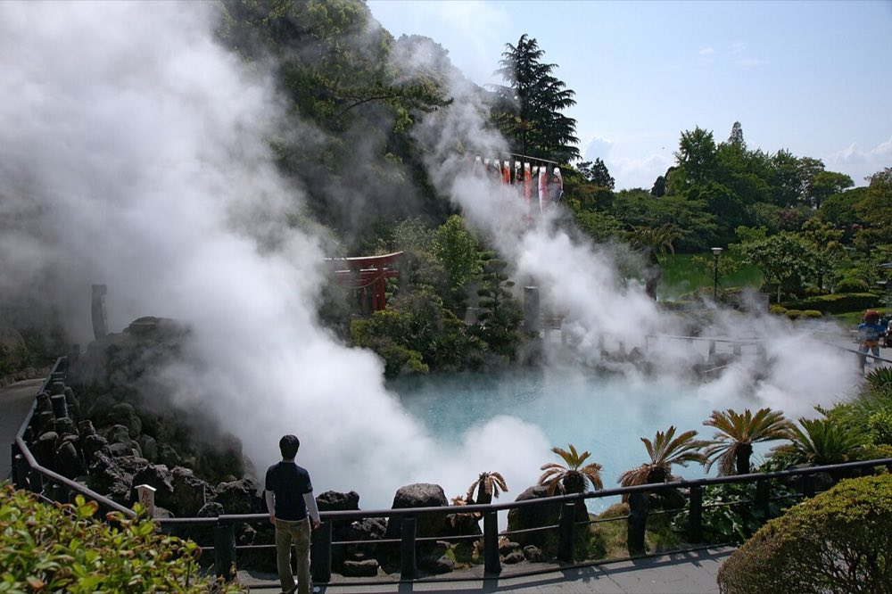
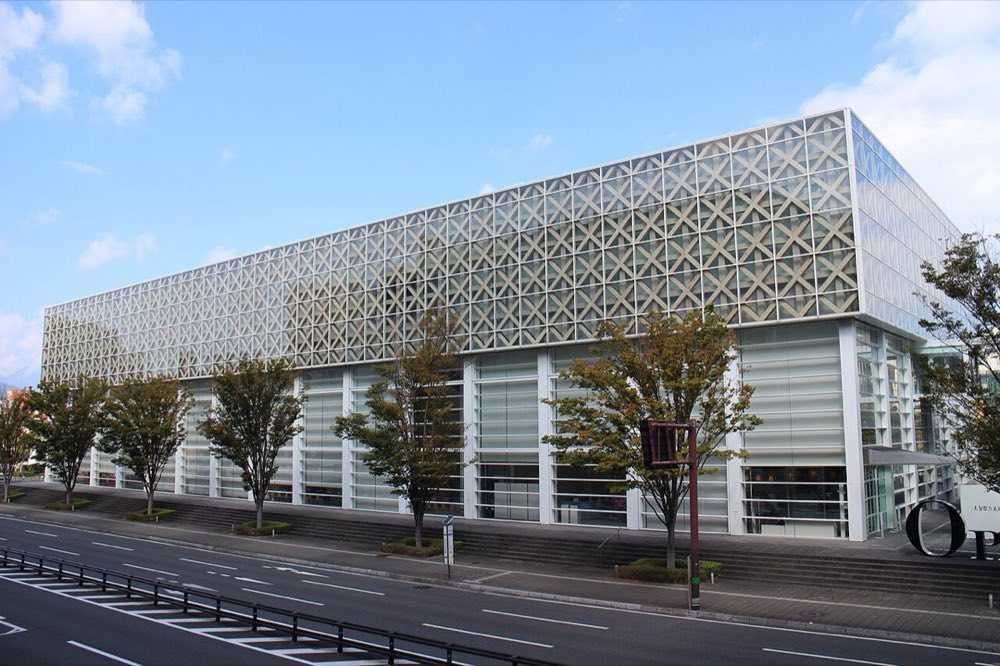

大分自驾游
从福冈出发三到四天：由布院泡温泉，国东半岛看山崖古寺与户外艺术，别府的地狱温泉，再到臼杵石佛。可以自驾，也可以坐火车，国东半岛则搭观光巴士。
2026 年 11 月为 12 月行程所做的调研。开放时间和价格会变动，出发前请再确认。车程和距离为估算，请以 Google 地图为准。

为什么选大分
如果你喜欢直岛和濑户内海的岛屿，这是九州最接近的选择：融入风景的当代艺术、日本最古老的一批佛教遗迹，每天最后再泡个温泉收尾。
12 月： 凉爽少雨，约 5–13°C，由布院有霜和晨雾，正是泡温泉的季节。年末高峰前属淡季（避开 12 月 28 日至 1 月 4 日）。OPAM 的雷诺阿展和出光名品展整月开放。
最佳季节： 11 月中下旬最好，由布院、国东和耶马溪正值红叶；3 月下旬至 4 月上旬有樱花。12 月是不错的淡季：天气清冷适合泡温泉，游客少。避开 6–7 月梅雨、夏末台风，以及黄金周、盂兰盆节和年末假期。
路线： 福冈机场 → 由布院 → 国东半岛 → 别府 → 大分与臼杵 → 宇佐 → 福冈。自驾四天约 560 公里（三天约 450 公里），也可坐火车加国东观光巴士。
亮点
- COMICO 美术馆和晨雾中的金鳞湖
- 国东半岛：山崖磨崖佛、九州最古老的木造建筑、山脊上的 Gormley 雕塑
- 别府：地狱巡游、铁轮蒸汽和地狱蒸晚餐
- 国宝臼杵石佛
- OPAM：雷诺阿展，以及 12 月 15 日起展出的长谷川等伯《竹虎图》
须知
- 不少博物馆周一休馆，别排在最后一天。
- 富贵寺大堂下雨不开放，国东要挑晴天去。
- 租车要雪地胎：山路清晨可能结冰。
两种玩法
💰 最划算：三天两晚自驾
- 住：由布院山荘 しゃらの木（约 1,100 元，很可能只住不含餐，晚餐在镇上吃），再住别府西铁度假酒店（约 700 元，屋顶温泉）。
- 玩：COMICO 美术馆和金鳞湖 → 国东古寺和 Gormley 雕塑 → 别府地狱和 OPAM。
- 吃：昭和之町ゑつ的荞麦面、铁轮地狱蒸、とよ常的鸡肉天妇罗。
- 每人约 2,700–3,100 元（不含机票）。不去臼杵和宇佐。
✨ 最佳体验：四天三晚自驾
- 住：由布院旅馆山并（9.1，每晚约 1,850–2,050 元）或 束の間（9.3，露天浴池），含怀石晚餐。之后两晚住 别府八汤御宿 Nono（9.0，每晚约 1,600 元）。
- 玩：完整四天行程，加上鹤见岳缆车、昭和之町和 OPAM 两个展。12 月 15 日以后去，可以看到长谷川等伯的《竹虎图》屏风。
- 吃：旅馆怀石、臼杵割烹 みつご的河豚午餐、地狱蒸和关鲭鱼。
- 每人约 5,000–5,750 元（不含机票）。
下面的每日行程两种玩法都适用，只是住宿和餐厅不同。
路线地图
● 带序号：按顺序的住宿城市 ● 开车日途经的景点或午餐。 点击地点可看是第几天。 ✈️ 机场。 按 4 天行程绘制；路线按 OpenStreetMap 路网绘制，仅供参考。
行程
🚗 福冈机场 → 由布院 · 115 km · 约 1 小时 30–45 分
COMICO 美术馆（隈研吾设计，需预约时段）、金鳞湖、汤之坪街道、湖畔的夏加尔美术馆。晚上在旅馆泡汤、吃晚餐。
富贵寺（九州最古老的木造建筑）🚗 → 熊野磨崖佛 · 10 km · 20 分钟（15:30 前到）🚗 → 两子寺 · 15 km · 25 分钟 🚗 → 五辻不动尊的 Gormley 雕塑 · 15 km · 约 30 分钟，或长崎鼻的小野洋子作品。午餐在昭和之町。
🚗 国东 → 别府铁轮 · 55 km · 约 1 小时
晚上在铁轮：地狱蒸料理、砂浴。
OPAM（雷诺阿展和出光名品展）。🚗 OPAM → 臼杵石佛 · 40 km · 45 分钟
臼杵石佛（国宝，16:30 停止入场）、武家老街和稻叶家下屋敷。🚗 臼杵 → 别府 · 50 km · 50 分钟
宇佐神宫，全日本八幡宫的总本宫；道之驿院内买当地农产品。🚗 宇佐 → 福冈机场 · 130 km · 约 1 小时 50 分
搭傍晚的航班。
COMICO 美术馆、金鳞湖、汤之坪街道、温泉。
富贵寺 → 熊野磨崖佛 → 两子寺 → Gormley 雕塑或长崎鼻。🚗 国东 → 别府 · 55 km · 约 1 小时
晚上逛铁轮。
搭傍晚的航班。不去臼杵和宇佐。
想少换酒店？全程住别府，由布院当一日游（别府 → 由布院 25 公里，约 35 分钟），但就少了住温泉旅馆的那一晚。
坐火车（不开车）
大分没有新干线，靠 JR 特急列车连接福冈。不开车的话，国东半岛最麻烦。
- 博多 → 由布院：由布院之森号，约 2 小时 10 分，6,130 日元（约 CNY 260）（网购更便宜），全车对号座，每天往返各三班，提前一个月开售。12 月有些日子改由普通特急“由布号”运行。或从福冈机场搭高速巴士，约 1 小时 50 分，3,250 日元（约 CNY 140）。
- 博多 → 别府 / 大分：特急“音速号”（Sonic），到大分约 2 小时，对号座约 6,900 日元（约 CNY 290），约每 30 分钟一班。
- 由布院 → 别府：直达巴士约 1 小时，或坐 JR 经大分转车。
- 别府 → 大分：JR 10–15 分钟。大分 → 臼杵：JR 日丰本线约 45 分钟。
- 宇佐神宫：JR 到宇佐站，再搭巴士 7–10 分钟（约 240 日元（约 CNY 10））或打车。
- 国东半岛：大分交通的国东半岛史迹巡游观光巴士（约 9 小时：宇佐神宫、富贵寺、真木大堂、熊野磨崖佛、两子寺），大分站 8:50 或别府站 9:15 出发，6,000 日元（约 CNY 250）（仅收现金），午餐自理。只在周六、周日和节假日运行；前一天 17:00 前电话预约 097-534-7455（11 月底时 12 月座位尚未确认开售）。包出租车 5–6 小时约 28,000–34,000 日元（约 CNY 1,170–1,420）。
- 铁路通票：JR 九州北九州通票 3 天 15,000 日元（约 CNY 630）、5 天 17,000 日元（约 CNY 710）。单是博多 → 由布院加大分 → 博多就约 13,000 日元（约 CNY 540），所以 3 天券只有在同期还去臼杵或宇佐时才划算。
必去景点


.jpg){kind=link}




- 国东半岛古寺：富贵寺（8:30–16:30，500 日元（约 CNY 20）；下雨天大堂内部不开放）、熊野磨崖佛（约 300 米陡峭石阶）、两子寺（8:30–16:30）。
- 国东半岛户外艺术：五辻不动尊下方 Antony Gormley 的《Another Time XX》、长崎鼻的小野洋子作品。免费、露天。
- 臼杵石佛：9:00–17:00，16:30 停止入场，550 日元（约 CNY 25）。之后逛二王座武家老街和稻叶家下屋敷（9:00–17:00）。
- 别府地狱巡游：七处只能看不能泡的温泉，每天 8:00–17:00；两日通票约 2,200 日元（约 CNY 90）。
- 铁轮与竹瓦温泉：街头蒸汽升腾；竹瓦温泉是 1938 年的木造浴场，有砂浴（泡汤 300 日元（约 CNY 15），砂浴 1,500 日元（约 CNY 65））。
- 金鳞湖（由布院）：泉水湖，冬季清晨的雾气最有名。免费。
- 宇佐神宫：境内 6:00–18:00；宝物馆周一或周二可能闭馆。
- 丰后高田昭和之町：保留 1950–60 年代风貌的商店街，以及昭和浪漫藏玩具博物馆（900 日元（约 CNY 40））。
- 别府鹤见岳缆车：登上 1,300 米；冬季上山末班 16:30，往返 1,800 日元（约 CNY 75）；天气差时停运。
- 高崎山：别府与大分之间的野生猕猴，9:00–17:00，约 520 日元（约 CNY 20）。
- 原尻瀑布：宽 120 米的瀑布，在臼杵内陆约 40 公里。免费。
2026 年 12 月的展览
- OPAM 大分县立美术馆：《我们的雷诺阿》（11 月 23 日–1 月 17 日，1,600 日元（约 CNY 65））和出光美术馆名品展（11 月 13 日–1 月 11 日，1,500 日元（约 CNY 65）；凭雷诺阿展票根 1,000 日元（约 CNY 40））。展期中换展：长谷川等伯的《竹虎图》屏风 12 月 15 日起展出。12 月每天开放，周五、周六至 20:00。
- 大分市历史资料馆：《大分特色——历史的记忆》，至 12 月 13 日，310 日元（约 CNY 15）。
- 尚未公布：查询时大分市美术馆、宇佐的县立历史博物馆（Riman）和由布院各美术馆都还没公布 2026 年 12 月的展览。别府的艺术博览会在 1 月下旬。
博物馆
| 博物馆 | 开放时间 | 休馆 | 门票 |
|---|---|---|---|
| OPAM 大分县立美术馆 | 10:00–19:00 | 每天开放 | 依展览 |
| COMICO 美术馆（由布院） | 9:30–17:00，16:00 停止入场 | 隔周周三 | 1,700 日元（约 CNY 70），分时段入场 |
| 金鳞湖夏加尔美术馆 | 9:00–17:00 | 不定休 | 约 600 日元（约 CNY 25） |
| 大分市美术馆 | 10:00–18:00 | 周一；12 月 28 日–1 月 4 日 | 440 日元（约 CNY 20） |
| 县立历史博物馆 Riman（宇佐） | 9:00–17:00 | 周一 | 约 310 日元（约 CNY 15） |
| 别府竹细工传统产业会馆 | 8:30–17:00 | 周一 | 约 300 日元（约 CNY 15） |
不少博物馆周一休馆，周五至周一的行程请别把它们排在最后一天。
吃什么
食べログ 3.49 · 920 条 标签为食べログ评分：3.0 为一般，3.5 以上很好，3.6 以上出色。评论很少的分数只代表数据不足，不代表难吃。2026 年 11 月 26 日从食べログ搜索结果读取。
选的都是顺路的店，并核对过 12 月周末的休息日。不少店不定休，出发前一周请电话确认。
第 1 天
- 午餐：福冈机场国内线 3 楼的“拉面跑道”，1,000–1,500 日元（约 CNY 40–65）。或由布院站旁的 由布まぶし 心 食べログ 3.50 · 425 条，丰后牛饭，2,000–3,200 日元（约 CNY 85–130）（11:00–16:00）。
- 晚餐和早餐：在旅馆吃；请确认方案，由布院有些房价不含餐。若不含，17:00 前在汤之坪街道解决。
第 2 天
第 3 天
- 早餐：酒店自助（西铁 1,500 日元（约 CNY 65），6:30–9:30）。
- 午餐：割烹 みつご 食べログ 3.58 · 51 条，臼杵河豚午餐套餐，约 5,000 日元（约 CNY 210）起，请预约 0972-62-5107（不定休；午市 11:00–14:00，请先打电话）。便宜些：敦煌 食べログ 3.62 · 65 条，中华套餐 1,000–2,000 日元（约 CNY 40–85）（周三休；有时包场，请先打 0972-62-8662）。三天两晚的话：大分站的 AMU Plaza。
- 晚餐：とよ常 食べログ 3.49 · 920 条，鸡肉天妇罗和关鲭鱼，2,000–4,000 日元（约 CNY 85–170）。或 胡月 食べログ 3.49 · 900 条，别府冷面老店，约 900 日元（约 CNY 40）（只收现金，周末营业到 19:00）。
第 4 天
- 早餐：酒店，或 友永面包店 食べログ 3.60 · 663 条的红豆面包（周日及节假日休）。
- 午餐：宇佐神宫参道上的かくまさ 食べログ 3.3–3.5 · 90 条，团子汁和鸡肉天妇罗，约 1,000 日元（约 CNY 40）。宇佐有名的炸鸡店太阁和すずや周一休息。
- 晚餐：晚班机前在福冈机场吃：国际线航站楼的餐厅，或国内线航站楼 3 楼的“拉面跑道”（1,000–1,500 日元（约 CNY 40–65）；两航站楼之间靠接驳巴士，请预留时间）。
购物
- 由布院汤之坪街道：工艺品、甜点、当地小吃；约 9:30–17:30。由布院花卉村适合快速逛逛，比较商业化。
- 别府站前商店街（やよい天狗、竹瓦）：竹编工艺、温泉用品、外带鸡肉天妇罗。
- 大分站 AMU Plaza：车站大型商场，10:00–20:30（周五至周日到 21:00）。
- 大分 Tokiwa 百货：地下食品街买臭橙（kabosu）、干香菇等大分特产。
- 丰后高田昭和之町：怀旧零食和杂货。
- 道之驿院内（宇佐）：农产品、香菇、臭橙，每天 8:00–17:00。
- 福冈机场国内线 2 楼：小鸡馒头等福冈伴手礼。
住宿
价格为 2026 年 11 月下旬在 Booking.com 上查到的 12 月某个周末、两人最便宜房型的含税价。温泉旅馆价格往往取决于是否含晚餐。
由布院温泉 8A1 八英智
9.6每晚约 1,200 元人民币。方案多为只住不含餐（免费晚餐便当是开业优惠）；请看清所订方案含什么。
山荘 しゃらの木
9.7每晚约 1,100 元人民币。馆内无餐厅，按只住不含餐计划，晚餐在镇上预订；16:00 起入住。预订时确认仍在营业。位于较安静的一侧。
西鉄リゾートイン別府
8.0每晚约 700 元人民币。屋顶露天温泉；自助早餐约 1,800 日元（约 CNY 75）。
预算
每人费用，按两人同住一间、合租一辆车计算，不含机票。2026 年 11 月估算，1 日元 ≈ 0.042 元人民币（2026 年 11 月 26 日汇率）。
- 四天三晚：约 3,600–4,100 元（住宿 1,300 · 租车、高速周游券和油费 980–1,330 · 餐饮 890–1,070 · 门票 410）
- 三天两晚：约 2,700–3,100 元
- 最佳体验版（四天）：约 5,000–5,750 元
- 改坐火车：每人铁路约 13,000–15,000 日元（约 CNY 540–630），另加国东观光巴士 6,000 日元（约 CNY 250）（仅周末和节假日）。
未包含：机票、旅馆不含餐时的晚餐、购物、旅游保险。
自驾须知
- 外国驾照需持 1949 年日内瓦公约格式的国际驾照，并同时携带驾照原件。中国大陆驾照在日本不能使用（中国不是该公约缔约国）。
- 九州高速公路周游券：3 天 8,400 日元（约 CNY 350），4 天 10,600 日元（约 CNY 440），与租车一起预订。查询时 Toyota、Budget、ORIX 和 Nippon Rent-A-Car 不提供此券。
- 租车时要求雪地胎或防滑链：由布院高地和国东山路清晨可能结冰。
- 总车程：四天约 550 公里，三天约 450 公里。
信息来源
查询日期：2026 年 11 月 26 日。尽量采用官方网站。部分营业时间和价格只来自点评或旅游信息网站（食べログ、るるぶ、Mapple、NAVITIME、Retty），可能已过时，出发前请确认休息日。车程和距离是路线规划工具的估算。酒店评分为 Booking.com 住客评分（满分 10 分）。所有内容均以我们自己的话整理。调研方法 →
- 博物馆与展览: OPAM（开馆日历和展览） · COMICO 美术馆 · 大分市历史资料馆 · 大分市美术馆 · 宇佐 Riman
- 景点: 臼杵石佛 · 臼杵观光 · 别府地狱巡游 · Tokyo Art Beat（国东艺术） · 国土交通省 道之驿
- 火车、道路与自驾: JR 九州 由布院之森 · JR 九州铁路通票 · 大分交通 国东观光巴士 · NEXCO 西日本 九州高速周游券 · JAF（国际驾照）
- 美食: Tabelog 食べログ（营业时间、休息日、价格） · 地狱蒸工房 · Mapple · Retty
- 住宿: Booking.com（价格和住客评分，2026 年 11 月 26 日） · Jalan（餐食方案）
- 天气: 日本气象厅
- 照片（Wikimedia Commons，自由授权）: 臼杵石佛 (照片: Maarten Heerlien, CC BY 2.0) · 由布院 晨雾中的金鳞湖 (照片: Tzu-hsun, Hsu, CC BY-SA 4.0) · 富贵寺大堂，九州最古老的木造建筑 (照片: STA3816, CC BY-SA 3.0) · 熊野磨崖佛 (照片: Hajime NAKANO from Tokyo, Japan, CC BY 2.0) · 别府 海地狱 (照片: 663highland, CC BY 2.5) · OPAM 大分县立美术馆（坂茂设计） (照片: Suicasmo, CC BY-SA 4.0)